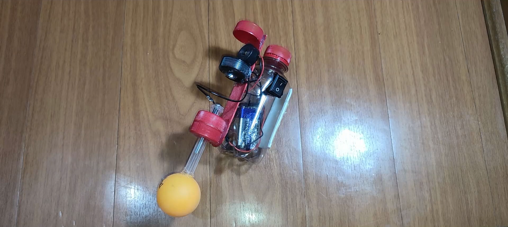
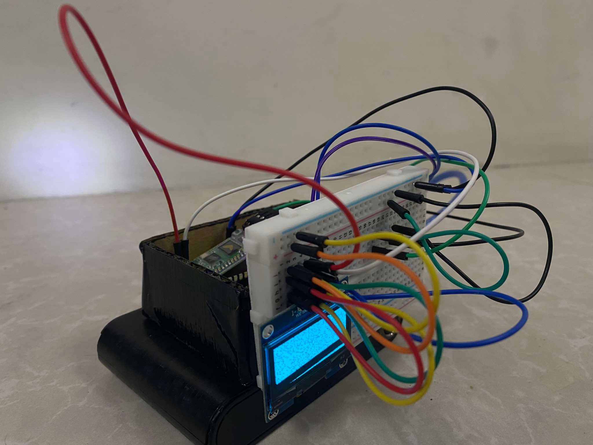
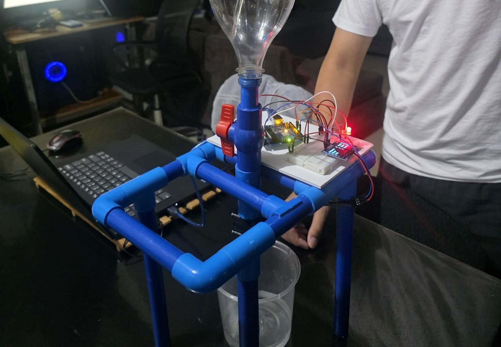

Projects

AquAlert
A water level measuring device for monitoring flood levels during a storm.
This device is designed to monitor water levels in real-time and provide alerts when the water reaches a certain threshold. It uses basic materials to measure the water level and sends notifications to users via a buzzer. The device is ideal for flood-prone areas, helping residents and authorities take timely action to prevent damage and ensure safety.

AllerSense
A device for monitoring and alerting users about allergens in common foods.
This device which uses arduino and MIT app inventor is designed to help individuals with food allergies by detecting allergens in common foods. This device is accompanied by an app that captures foods and interprets them using a machine learning model then sends food information to the device. The device then alerts the user if any allergens are detected, helping them make informed decisions about what they eat and avoid potential allergic reactions.

DropWise
A water-monitoring device for monitoring water flow speed, and amount that flowed.
This device uses Arduino and a flow sensor to monitor water flow speed and the total amount of water that has flowed through a pipe. It is designed to help users track their water usage, identify leaks, and conserve water. The device can be used in residential, commercial, and industrial settings, providing valuable data for managing water resources effectively.